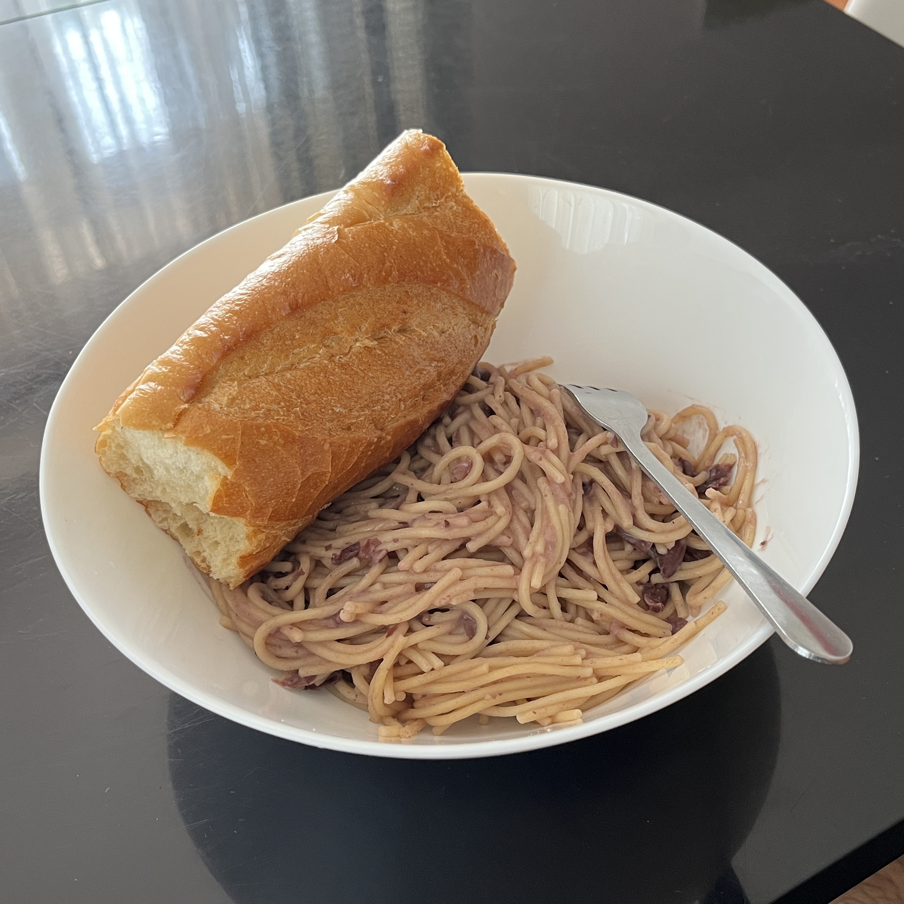

Home
Giulio's Pasta

A humble bowl of bean pasta.
Overview
This is a rustic, one-pot Italian-inspired dish that turns humble pantry
staples into something silky, savoury and deeply comforting. Red kidney
beans lend body and creaminess to the sauce, while the pasta cooks right
in the same pot.
Best enjoyed with a drizzle of olive oil and freshly cracked pepper on
top.
Ingredients
- Olive oil, to coat the pot
- 1 clove garlic, core removed
- 1 can red kidney beans (include the liquid)
- 2.5 cans of water (adjust for desired consistency)
- A small palmful of salt
- Broken spaghetti pasta
Steps
- Heat olive oil in a medium pot over medium heat.
-
Add the garlic clove and cook until lightly browned, then remove it.
-
Pour the entire contents of the red kidney bean can into the pot and
stir well to combine with the oil.
-
Add water a cup at a time, stirring as you go and bring the mixture to a
boil.
- Once boiling, add the salt and stir until dissolved.
-
Add the pasta and set a timer for two minutes less than the package
cooking time.
-
Continue stirring periodically as the pasta cooks and thickens the
broth.
-
If there's too much liquid, ladle out a small amount and set aside.
-
When the timer rings, remove from heat and stir again to reach a creamy
consistency.
- Serve warm, optionally topped with olive oil or grated cheese.